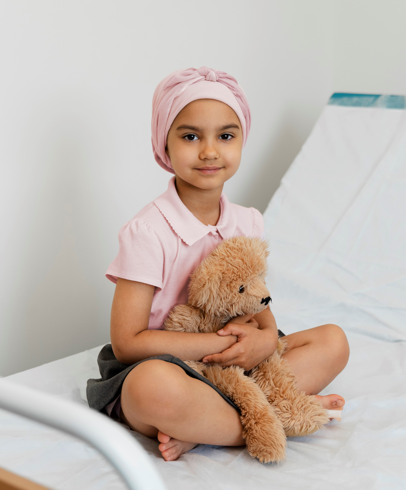

Cancer is a leading cause of death worldwide, accounting for nearly 10 million
deaths in 2020, or nearly one in six deaths. The cancer death rate is 158.3 per
100,000 men and women per year. And every year approximately 400 000
children prone to cancer. In the age to play in the playground, these children
are suffering in the hospital beds. Let's be the hand that wake up them from
those beds like deathbeds, come and join the cause...
deaths in 2020, or nearly one in six deaths. The cancer death rate is 158.3 per
100,000 men and women per year. And every year approximately 400 000
children prone to cancer. In the age to play in the playground, these children
are suffering in the hospital beds. Let's be the hand that wake up them from
those beds like deathbeds, come and join the cause...


Scan to Be the part of the CAUSE
"Every day is a chance to create a memory and to love a little more."
- Jessi Hooks
- Jessi Hooks

Types of Cancer and its Treatment
Breast Cancer
Skin cancer is the most frequent cancer in women in the United
States, followed by breast cancer. However, from 2003 to 2008,
research portrayed that there were around 2,000 occurrences that
men can also get it. In women, the milk-producing glands or
the ducts that transport milk is where cancer typically develops.
Lungs Cancer
The most lethal cancer in the US is lung and bronchial cancer.
It most frequently affects people between the ages of 55 to 65,
which is mostly brought on by smoking and tobacco products.
Colon Cancer
According to the National Cancer Institute, rectal cancer develops
in the last few inches of the large intestine next to the anus. On
the other hand, colon cancer develops in the tissues of the colon.
Screening is advised to discover polyps before either of them
develops into cancer.
Pancreatic Cancer
The tissues of the pancreas, which help regulate digestion and
metabolism, are where pancreatic cancer first appears. It frequently
progresses covertly and fast, making detection and early
management challenging.
Prostate Cancer
According to the NCI, this malignancy is the second greatest
cause of cancer mortality in men after lung and bronchial cancer.
The prostate gland, which creates the seminal fluid used to
transport sperm, is where prostate cancer typically begins to
grow slowly.
Ovarian Cancer
According to the NCI, ovarian cancer was the fourth leading cause
of cancer-related deaths in women. According to the Mayo Clinic,
ovarian cancer is easier to treat but harder to detect in its early
stages. Early signs include pelvic pain, the need to urinate, and
abdominal discomfort.
Treatments
There are several treatment options available for lung cancer, depending on the stage and type of cancer. Common approaches include surgery, radiation therapy, chemotherapy, targeted therapy, and immunotherapy. Surgery involves removing the tumor and surrounding tissues, while radiation therapy uses high-energy X-rays to destroy cancer cells. Chemotherapy uses drugs to kill cancer cells throughout the body. Targeted therapy focuses on specific genetic changes in cancer cells, while immunotherapy helps stimulate the body's immune system to fight cancer. Treatment plans are often personalized to the individual's needs and may involve a combination of these approaches.
Treatments
Colon cancer treatment typically involves a combination of surgery, chemotherapy, and targeted therapy. Surgery is the primary approach and involves removing the tumor along with surrounding tissues. In cases where the cancer has spread, chemotherapy is used to kill cancer cells throughout the body. Targeted therapy uses drugs that specifically target cancer cells, blocking their growth and spread. Additionally, radiation therapy may be employed to destroy cancer cells or relieve symptoms. Treatment plans are individualized based on the stage of cancer, overall health of the patient, and other factors, with the aim of controlling or eliminating the disease and improving the patient's quality of life.
Treatments
Pancreatic cancer treatments typically depend on the stage of the disease. In early stages, surgery may be an option to remove the tumor. Chemotherapy is commonly used before and after surgery to shrink the tumor and kill any remaining cancer cells. Radiation therapy may be used alongside chemotherapy to target the tumor and reduce the risk of recurrence. For advanced stages or in cases where surgery is not possible, targeted therapies and immunotherapy may be employed to block specific cancer cell growth pathways or enhance the body's immune response against the tumor. Clinical trials also offer potential innovative treatments for pancreatic cancer.
Treatments
Treatment options for prostate cancer depend on the stage and aggressiveness of the disease. In the early stages, active surveillance may be recommended, with regular monitoring of PSA levels and biopsies. Localized prostate cancer can be treated with surgery (prostatectomy), radiation therapy (external beam or brachytherapy), or a combination of both. Advanced prostate cancer may require hormone therapy to suppress the production of testosterone, which fuels the growth of cancer cells. Additional options include chemotherapy, immunotherapy, and targeted therapy, which aim to destroy cancer cells or slow their growth. Treatment decisions should be made in consultation with a healthcare professional based on individual circumstances.
Treatments
The treatment options for ovarian cancer typically involve a combination of surgery, chemotherapy, and targeted therapy. Surgery is usually the first step and involves the removal of the affected ovaries and any surrounding tissues or lymph nodes. Chemotherapy is administered either before or after surgery to kill cancer cells that may have spread beyond the ovaries. Targeted therapy, such as PARP inhibitors, may be used in certain cases to block specific pathways involved in cancer growth. Other treatment modalities, such as radiation therapy and immunotherapy, may also be considered based on the individual's specific circumstances.
Treatments
Cancer treatments can vary depending on the type and stage of the disease. Common treatments include surgery to remove tumors, radiation therapy to target and kill cancer cells, chemotherapy to destroy cancer cells throughout the body, and immunotherapy to boost the immune system's ability to fight cancer. Other approaches include targeted therapy that focuses on specific molecular abnormalities in cancer cells, hormone therapy for hormone-related cancers, and stem cell transplantation to replace damaged bone marrow. Treatment plans are often tailored to each individual's condition, and may involve a combination of these approaches. It's important to consult with healthcare professionals to determine the most appropriate treatment for a specific cancer case.